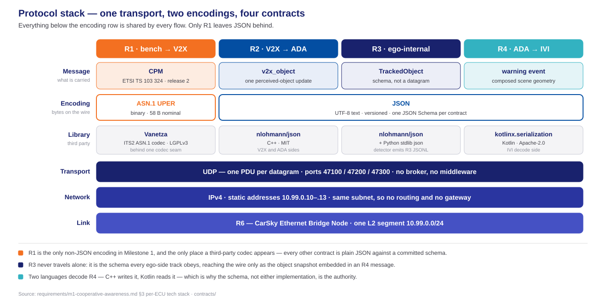
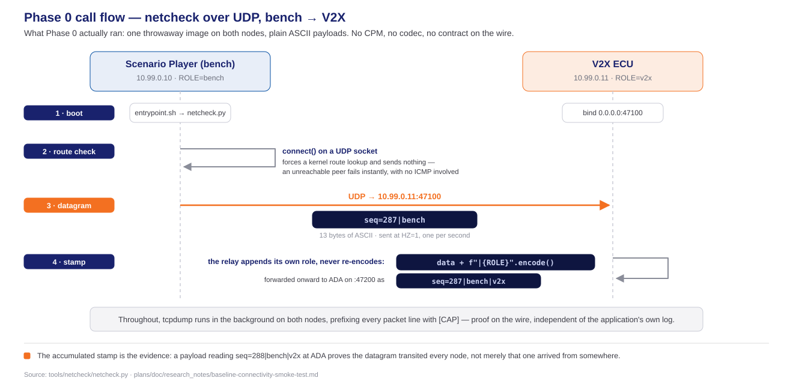

Phase 0 — Design Concepts
Source: phase0_tasks.md · milestone1.md · phase0-contract-freeze-hld.md · contracts/
Table of contents
Terminology
every coined word, before anything uses it
The blueprint
five nodes, one bridge, three flows
The contracts
R1, R2, R3, R4 one at a time, and where each lives
Protocol stack & libraries
one transport, two encodings, four third parties
The bench and the V2X node
what Phase 0 left behind
The smoke test
what it settled, and where the full story lives
Tracks, lanes and task groups — the planning vocabulary — are Deck B's subject, not this deck's.
Terminology
The platform's words
CarSky's own vocabulary. Every later slide uses these without re-explaining them.
| Term | What it means here |
|---|---|
| Blueprint | The design of one vehicle — its nodes and how they are wired. One blueprint is one car. Nothing runs yet. |
| Node | One ECU inside a blueprint. Its type decides how it runs: a Container Node runs an OCI image, a Skycraft Node runs an Android guest. |
| Pin | A node's connection point. Milestone 1 uses exactly one kind, the ethernet pin, and exactly one per node. |
| Ethernet Bridge | A node whose only job is to join the other nodes' pins into one network. |
| Room | What a deployed blueprint becomes — the live, running instance. The blueprint is the drawing; the Room is the built thing. |
| Deployment | The act of turning a blueprint into a Room. Only a deployment starts a container. |
- Blueprint → Room is the whole mental model. Editing a blueprint changes nothing that is running; a new deployment is what makes a change real.
Our words
Terms this project coined or narrowed. They carry a specific meaning here that they do not carry generally.
| Term | What it means here |
|---|---|
| Contract | A frozen, versioned message definition that two nodes agree on — a JSON Schema or an encoding profile, committed to the repository. Not documentation about code: it is the authority the code is measured against. |
| R-number | The requirement identifier from the requirements report. R1–R4 are the four contracts; R5–R6 the platform and network; R7 and beyond, per-node behaviour. |
| Seam | A boundary chosen so one side can be replaced without touching the other — the codec seam, the radio-adapter seam. |
| Frozen | Changed only by re-freezing across every consumer at once. A contract that one node edits alone is broken, not updated. |
| Ego | The vehicle the system runs in — vehicle A, the one whose driver gets warned. |
| Bench | Sanctioned test equipment that shares the Room network — here the Scenario Player, which stands in for the modem and the outside world. |
- "Contract" is the load-bearing word in this deck. Phase 0 produced no running feature; what it produced was contracts.
The four contracts, named
The R-numbers that label every arrow on the next section's diagram. Each gets a full slide in § 03.
| Contract | Between | Carries | |
|---|---|---|---|
| R1 | CPM profile | bench → V2X ECU | The V2X message as it exists on the air |
| R2 | v2x_object | V2X ECU → ADA ECU | One perceived object, handed inward |
| R3 | TrackedObject | inside the ADA ECU | The shape every tracked object obeys, wherever it came from |
| R4 | ADA → IVI warning | ADA ECU → IVI ECU | The warning, and the scene to draw for it |
- Three of the four are messages between nodes. R3 is not — it is a schema used inside one node, which is why it has no port and no arrow of its own.
- The numbers are not a sequence of steps. They are identifiers; R1 through R4 happen to fall in flow order, which is a convenience, not a rule.
The contract vocabulary
The words the contract artifacts themselves carry — they appear in the schemas, the CI lanes and Deck B.
| Term | What it means here |
|---|---|
| UPER | Unaligned Packed Encoding Rules — the ASN.1 rules that pack one R1 CPM into 58 bytes. The only non-JSON encoding in Milestone 1. |
| Octet | One byte. ASN.1 wording, kept because the profile document uses it. |
| Test vector | One case: a message content paired with the exact bytes it must encode to — nominal.json with nominal.uper. |
| Golden | Those bytes are committed and frozen. A test encodes the .json and compares byte for byte against the stored .uper, rather than recomputing what it ought to be. |
| Corpus | The whole set of vectors — six here, chosen to cover the edges rather than one happy path. |
- The six cases:
nominal·mdt-max/mdt-min(±2047 ms) ·conf-unavailable(the 101 sentinel) ·gate-boundary(an object at exactly 30 m) ·coord-large(near the large-coordinate bound). - Why they exist: the same message is encoded by C++ in the V2X ECU and decoded by a separate helper on the bench. The corpus is the one reference both are measured against.
The blueprint
Five nodes, not four
One blueprint is one car — vehicle A, the ego. Four of its nodes are ECU or bench roles; the fifth is the Ethernet Bridge that turns them into a network.
| Node | Node type | Address | Serves |
|---|---|---|---|
| Scenario Player (bench) | Container Node | 10.99.0.10 | R11 |
| V2X ECU | Container Node | 10.99.0.11 | R7–R9 |
| ADA ECU | Container Node | 10.99.0.12 | R12–R15 |
| IVI ECU | Skycraft Node (AAOS guest) | 10.99.0.13 | R16–R17 |
| Ethernet Bridge | Ethernet Bridge Node | 10.99.0.1 | R6 |
- The bridge owns no pin of its own. Each role node declares exactly one
ethernetpin wired to it — a star, not a chain, on the single subnet10.99.0.0/24. - The bench is a node, not a module. It shares the Room network as test equipment; its code never lands in the V2X ECU's folder.
- Static addresses on purpose, so every UDP target stays deterministic across redeploys — and each one arrives by node config, never as a literal in source.
Every flow labelled by its contract

The routing, in one line each
- Every hop is same-subnet UDP. No routing, no gateway, no broker, no middleware — three different ports on one NIC, not three different pins.
- One PDU per datagram, on
47100(R1),47200(R2) and47300(R4). A message never spans two datagrams. - The direction is one-way at every hop in Milestone 1. Nothing flows back from the IVI toward the bench.
- R3 has no hop of its own — it lives inside the ADA ECU, and reaches the wire only wrapped in an R4 message.
What each contract actually says is the next section, one slide at a time.
The contracts
R1 — the CPM profile
The V2X message as it exists on the air. The only contract that is not JSON.
| Defines | Which ETSI CPM fields Milestone 1 uses, their units and their bounds — a profile, narrowing a large standard to what the demo needs |
|---|---|
| Standard | ETSI TS 103 324, release 2 |
| Encoding | ASN.1 UPER — 58 bytes for the nominal case |
| Artifacts | r1-cpm-content.schema.json — the content shape · r1-cpm-profile.md — the field-by-field profile · golden-vectors/ — six .json/.uper pairs |
| Copies live in | V2X_ECU/contracts/ · Scenario_Player/contracts/ |
- Two independent implementations must agree on it — the V2X ECU's C++ codec and the bench's encoder helper — which is exactly why the golden vectors exist.
- CI generated the vectors, not a person, and the same run proved regeneration is deterministic: generate twice,
diffempty.
R2 — v2x_object
What the V2X ECU hands inward once it has decoded the air message.
| Defines | One perceived-object update: identity, position, kinematics, confidence, and the timestamp it was valid at |
|---|---|
| Direction | V2X ECU → ADA ECU, UDP 47200 |
| Encoding | JSON, versioned |
| Artifacts | r2-v2x-object.schema.json · samples/r2-object.json |
| Copies live in | V2X_ECU/contracts/ · ADA_ECU/contracts/ |
object.distanceis derived here, never transmitted. The air message carries a relative position; distance is computed on arrival, so the two can never disagree.- One message per object update, not a batch — a CPM describing three objects becomes three R2 messages.
R3 — TrackedObject
Not a message. The single shape every ego-side object obeys, whoever produced it.
| Defines | The one track record: identity, state, geometry, provenance, and the confidence carried with it |
|---|---|
| Direction | None — internal to the ADA ECU |
| Encoding | JSON, versioned |
| Artifacts | r3-tracked-object.schema.json · samples/r3-tracked-object.json |
| Copies live in | ADA_ECU/contracts/ · IVI_ECU/contracts/ |
- Its whole purpose is to erase the difference between sources. An object the camera detected and an object that arrived over the relay become the same kind of thing the moment they enter the store.
provenanceis what survives that flattening — it records how the object was learned, which is what lets the demo prove C was never seen directly.- The IVI holds a copy because R3 arrives embedded in every R4 message; the IVI must decode it even though it never receives one alone.
R4 — the ADA → IVI warning
The warning, and everything needed to draw it. The IVI renders from this message alone.
| Defines | A versioned warning event: what the risk is, which object raised it, and the composed scene geometry to display |
|---|---|
| Direction | ADA ECU → IVI ECU, UDP 47300 |
| Encoding | JSON, versioned |
| Artifacts | r4-ada-ivi.schema.json · samples/r4-warning.json · r4-state.json · r4-unknown-warning.json |
| Copies live in | ADA_ECU/contracts/ · IVI_ECU/contracts/ |
- The IVI performs no fusion and holds no world model. Everything it draws comes from the message in hand, which is what keeps the display honest.
r4-unknown-warning.jsonis a deliberate sample — a warning type the IVI does not recognise, proving forward compatibility is tested rather than assumed.
Where the contracts live
One authority at the root; a working copy inside each node that consumes it.
| Location | Holds |
|---|---|
contracts/ | The frozen originals — all four schemas, the R1 profile, the golden vectors, the samples |
V2X_ECU/contracts/ | R1, R2 |
ADA_ECU/contracts/ | R2, R3, R4 |
IVI_ECU/contracts/ | R3, R4 |
Scenario_Player/contracts/ | R1 |
- The copies are not forks.
contracts/sync-manifest.jsonlists every file that must match, andcontracts/check_sync.pyfails CI the moment one drifts. - Why copy at all: each node folder must build on its own, with no cross-folder imports. A node reaching up into a shared directory would break that rule.
- A node holds only what it speaks. The bench holds R1 and nothing else, because R1 is the only contract it touches.
Protocol stack & libraries
One transport, two encodings, four third parties

What each library is there for
Four third-party dependencies, each doing one job. All open source, all Linux.
| Library | Licence | Serves | Job |
|---|---|---|---|
| Vanetza | LGPLv3 | R1 | ETSI ITS release-2 ASN.1 codec — the only component that speaks UPER |
| nlohmann/json | MIT | R2, R3, R4 | JSON binding on both C++ sides, the V2X ECU and the ADA ECU |
Python stdlib json | PSF | R1, R3 | The bench's scenario data, and the detector's R3 output stream |
| kotlinx.serialization | Apache-2.0 | R3, R4 | JSON binding on the IVI, the only Kotlin node |
- Vanetza sits behind one codec seam, so no application code imports it directly — the standard can move without the application moving with it.
- Nothing here is a framework. Every one of the four is a library the code calls; none of them owns the program's control flow.
- The transport needs no library at all — UDP sockets come from each language's standard library.
The bench and the V2X node
Phase 0 built one image for both
Neither node has its real implementation yet. Phase 0 needed only to prove the wire between them, so both ran the same throwaway container.
| Scenario Player (bench) | V2X ECU | |
|---|---|---|
| Phase 0 image | m1-netcheck:latest | m1-netcheck:latest — the same one |
| Difference between them | Environment variables only — ROLE, NEXT_HOP_HOST/PORT | Environment variables only — plus LISTEN_PORT, which is what makes it a relay |
| Phase 0 role | Source: emits one datagram per second | Relay: receives, stamps, forwards |
| Contract touched | None | None |
- One image, three roles, zero code branches. Whether a node sends, relays or sinks is decided entirely by which variables are set — the same discipline the real ECUs follow.
- This is a deliberate placeholder, not a prototype. No part of
netcheck.pybecomes production code; it is scaffolding that proved the topology and was then set aside.
The exchange, as Phase 0 ran it

What Phase 1 adds to both
Phase 0 answered can they talk. Phase 1 answers what they say — and that is where the real designs arrive.
| Arriving in Phase 1 | |
|---|---|
| Scenario Player | Scenario configs as data, the kinematic model, and the encoder helper that turns a scenario into real R1 bytes |
| V2X ECU | The radio-adapter seam, the modem stub behind it, and the receive pipeline: decode, validate, de-duplicate, forward as R2 |
| Both | A high-level design, a per-node call flow, and unit tests against the golden vectors |
- The netcheck image retires the moment either real image lands. Nothing carries forward from it except the confidence that the network works.
- The per-node call flows are already drafted in each node's
doc/folder — they are Phase 1's material, and belong to Phase 1's deck.
The smoke test
Proving the wire, before the ECUs existed
Phase 0's fourth acceptance box was closed by a connectivity smoke test on blueprint trial2_minh. Its method, tooling, AI/human split and evidence are a deck of their own — this slide states only what it settled.
- All five pass criteria met, 2026-07-31. Every node running · zero errors · live per-node logs · traffic captured on the wire · the chain proven by the payload's own accumulated stamps.
- It closed the last Phase 0 acceptance box — blueprint topology documented and validated — which is what unblocked Phase 1.
- It settled two facts every later image inherits: which registry host actually answers, and that node images must be single-platform
linux/arm64. - It left two items open — bridge MTU headroom, and whether the AAOS guest can host a listener — neither of them blocking.
- Full story, slide by slide: phase0-smoke-test-deck.html — method, tested object, testing agent, human in the loop, results. Nothing from it is repeated here.
Thank you!
Phase 0 — Design Concepts · FPT Hackathon 2026